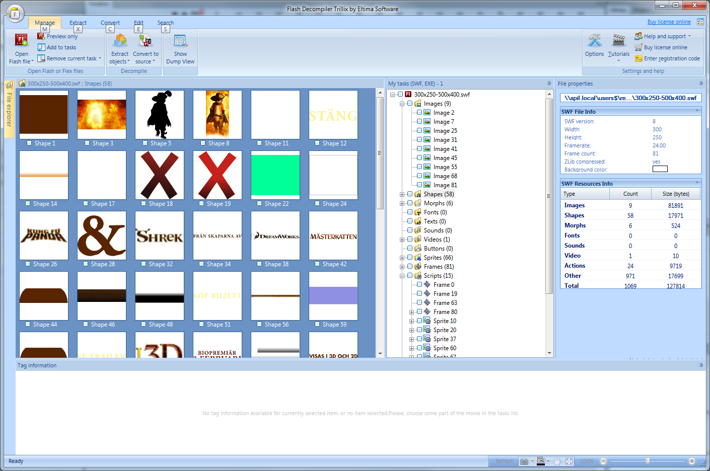

Flash
Introduction in Flash
- How we can adjust the FLV path in the action script
- How to check the player function
- Which programs can we use to edit swf files
- How can we design a flash asset.
- Deep dive into the SWF decompiler
- What elements must every flash file have
- Some basic terminology of the flash program
- How to adjust/read the clickTAG/clickTag inside the flash file
- How can we detect the click layers and adjust it's expand/collaps functionality
- If we could learn how to create VPAID SWFs ourselves in-house
- How to adjust a close-button (because now they often don't work)
How we can adjust the FLV path
This really depends on how the FLA file is build up, if the video is embedded via the FLV Component than you can change it in the component inspector. Else it's probably an external file that is called upon within the ActionScript.

How to check the player function?
If you mean which version you have, you can check: Adobe Help If you mean which version the flash file is targeted for, you can drag the file into SWF Decompiler and it will show in the File properties.
Which programs can we use to edit swf files?
You can’t edit SWF files, these are the end product of FLA files which you can compile in Adobe Flash. You can try to decompile a SWF file with decompiler, but this usually shows bits of code and the images/shapes used in SWF. But it won’t show you the timeline how the SWF has been build up.
how can we design a flash asset?
With Adobe Flash or in Photoshop and import those assets in Flash.
Deep dive into the SWF decompiler
It’s pretty self explanatory, you load a SWF file in the decompiler and you’ll see the following:

In the grid you’ll see (in this case) all the shapes of the SWF. Right to that is a list with all components of the SWF, here you can find the images, shapes, morphs, sprites, scripts, etc. Next to that you have the file properties that shows which flash version this file is.
What elements must every flash file have
Depends on what kind SWF file you want to build, but the average Flooradverts has the following files:
- Images (jpg,png,gif...)
- Video (flv, mpeg,avi...)
Can have also vectors.
Some basic terminology of the flash program
- Layers: Here you can place content for your SWF files. For example, if you have two layers the upper layers content will be on top of the lower layers content etc...
- Timeline: On the timeline you will place all layers and actionscripts. Also you can make animation with the use of the time line.
- Action: you can open the action panel with F9 or right-mouse click. in the action panel you can place clickTAGS for example.
How to adjust/read the clickTAG/clickTag inside the flash file
You can read clickTAGs inside the flash files and looking for the actionscript layer.
AS2 clickTAG
on (release) {
getURL(_root.clickTAG, '_blank');
}
AS3 clickTAG
import flash.events.MouseEvent;
import flash.net.URLRequest;
import flash.net.navigateToURL;
click_btn.addEventListener(MouseEvent.MOUSE_UP, onClick);
function onClick(e:MouseEvent):void {
var click_url:String = root.loaderInfo.parameters.clickTAG;
if(click_url) {
navigateToURL(new URLRequest(click_url), '_blank');
}
}
How can we detect the click layers and adjust it’s expand/collaps functionality
Not really, you always need to have the FLA file to detect the click layer.
if we could learn how to create VPAID SWFs ourselves in-house
We never build a VPAID SWF ourselves, we not really know right now what is needed to build this. What i know is that VPAID is basically a XML feed and you need a video player (OVA) and plugins to let VPAID run inside a SWF.
How to adjust a close-button
Close buttons can only be adjusted if the floorad is build in-house. if an external partner build the close button it needs to fix it themselves.